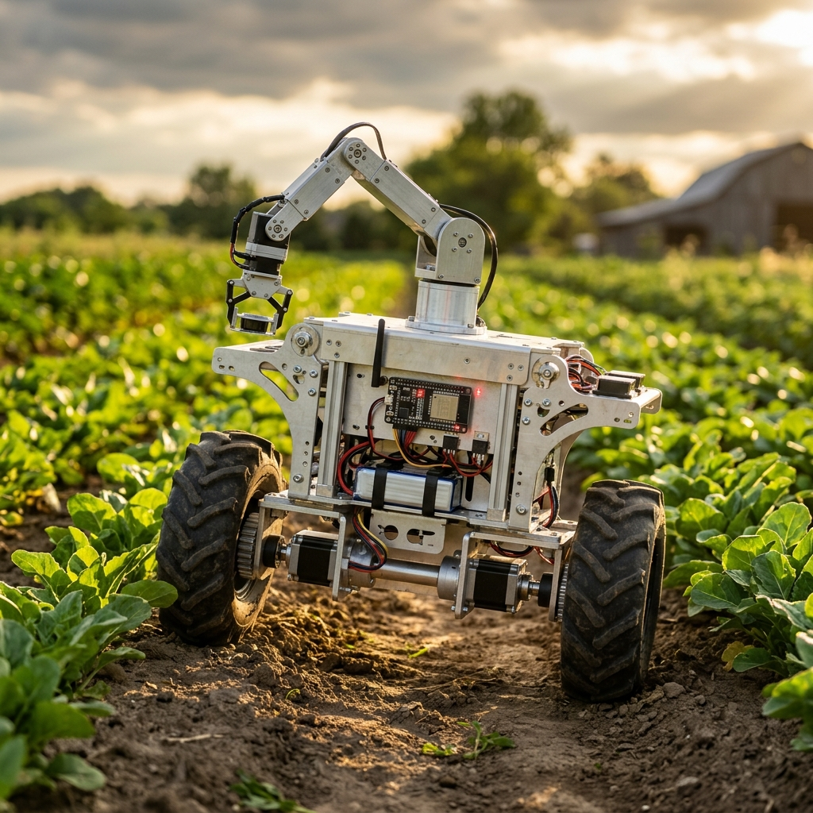
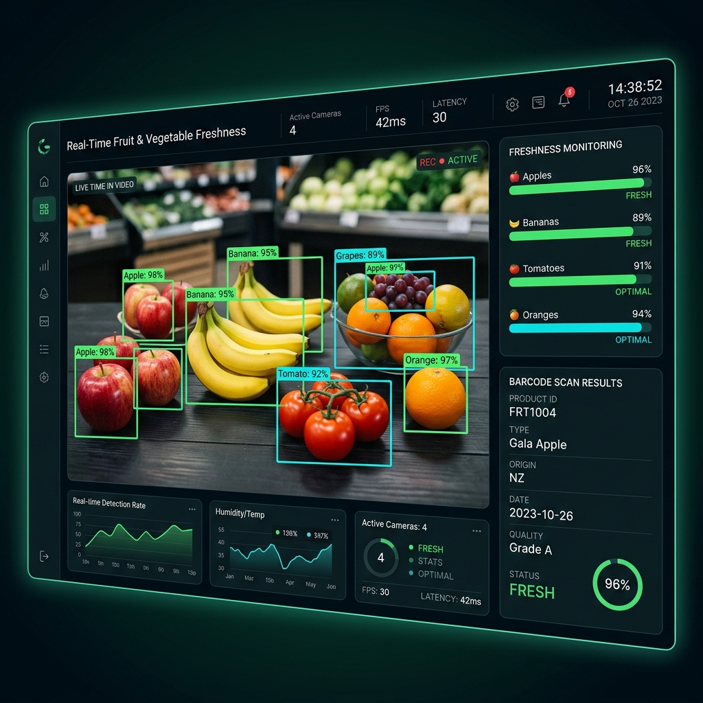
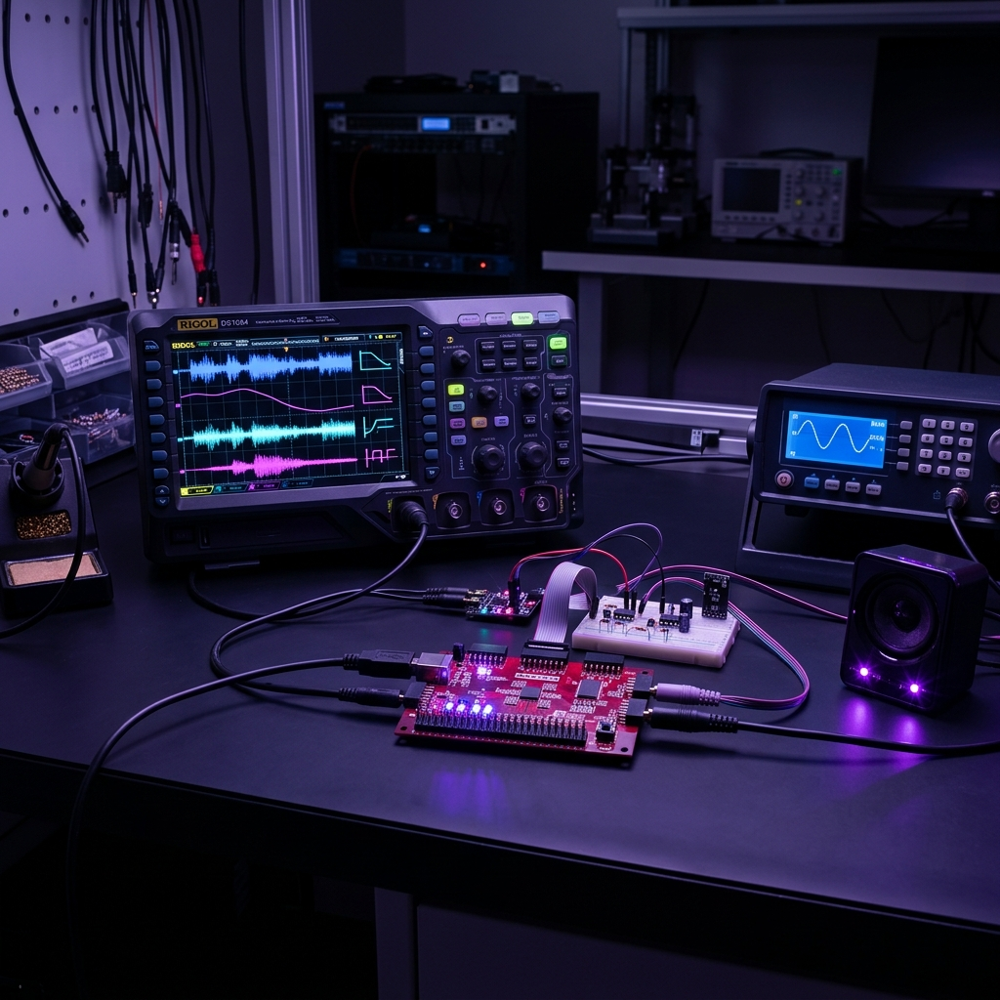
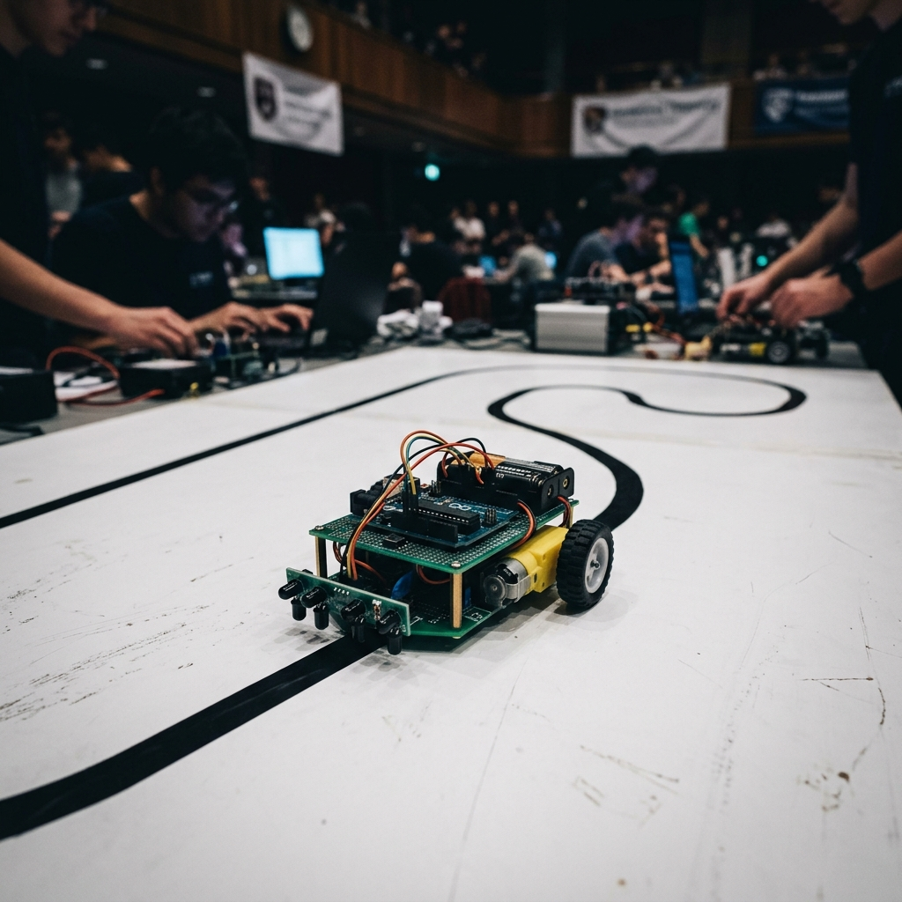

Electronics & Telecommunication engineer who builds real hardware — from self-balancing robots running custom Kalman filters to network security systems. I like solving problems that need both a soldering iron and a terminal.
I'm a fresh Electronics & Telecommunication graduate from St. Francis Institute of Technology, Mumbai (2026). My final-year project — a 5.6 kg self-balancing agricultural rover — taught me more about control theory, motor dynamics, and late-night debugging than four years of textbooks ever could.
I gravitate toward problems where software meets hardware: writing Kalman filters that keep a robot upright, designing PCB-level motor control, and building network security tools that actually flag real threats. I've competed in Flipkart Grid 6.0 and built a line-follower bot for IIT Bombay's tech fest.
When I'm not wiring circuits, I'm usually on TryHackMe breaking into things (legally) or analysing malware samples — because understanding how systems fail makes you better at building ones that don't.
Each project started with a real problem and ended with working hardware or software — here's what I built and why.

★ Final Year ProjectProblem → Standard farm rovers crush crops because they're wide. Small balancing bots exist, but none can carry 5 kg of payload while operating a robotic arm without tipping over.
Solution → Built a two-wheeled self-balancing platform with a 3-tier vertical stack chassis in mild steel — the tall design deliberately raises the centre of gravity so it falls slower and gives the controller more reaction time. Wrote bare-metal I2C to read raw MPU6886 data, passed it through a custom 1D Kalman filter to clean out stepper motor vibration noise, and fed the result into a 200 Hz PID loop running on ESP32 hardware timers — sub-millisecond corrections driving 24V NEMA 23 steppers through DM542 drivers. The 3-DOF arm only moves a lightweight fertiliser nozzle (the heavy hopper sits on the chassis) so arm movement barely disturbs balance. A separate Plant Monitoring Module (Arduino + DHT11 + soil moisture + rain sensor) sends field data over Bluetooth.

Flipkart Grid 6.0Problem → Grocery supply chains need a fast, automated way to check whether fruits and vegetables are still fresh — manual inspection is slow and inconsistent.
Solution → Built a YOLO-based computer vision system that classifies produce freshness with 96% accuracy. Integrated barcode scanning (PyZbar), OCR (Tesseract), and object counting into a single real-time Streamlit dashboard — one screen showing freshness scores, product info, and inventory count. Trained on a custom dataset using Roboflow SDK for annotation and augmentation.
Problem → Network admins can't manually monitor every packet — they need automated tools that catch port scans, DDoS floods, and unauthorized access in real time.
Solution → Trained Random Forest and SVM classifiers on network traffic dumps to flag malicious patterns. The system catches port scans, DDoS attempts, and suspicious login behaviour in simulated environments — filtering real threats from normal traffic without flooding the admin with false alarms.
Problem → Surveillance cameras generate hours of footage but can't extract any useful info — you still need a human to identify age, gender, or count people in real time.
Solution → Built a standalone detection unit using an ESP32 and Raspberry Pi Zero with a camera module. The Pi runs OpenCV's DNN module with pre-trained Caffe models for face detection, then pipes frames through age/gender classifiers (tested Logistic Regression, SVM, and a small neural net). The ESP32 handles I/O, triggers, and communication with external displays. The whole setup runs headless — plug in power and it starts detecting.

FPGA / RTLProblem → Software audio filters introduce latency. For real-time processing you need the filter running in hardware — but designing FIR engines on an FPGA means writing your own multiply-accumulate pipeline from scratch.
Solution → Implemented a 45/89-tap FIR filter in SystemVerilog on a Basys-3 FPGA. Designed four switchable filters — low-pass (1 kHz), high-pass (2 kHz), bandpass (1–4 kHz), and moving average — with hardcoded 16-bit coefficients. Audio comes in through an I2S (AXI-Stream) interface, gets convolved in real time, and goes out with zero software latency. Used MATLAB for coefficient generation and wrote SystemVerilog testbenches for verification.

IIT Bombay FestProblem → A bot needs to follow a black line on a white track at speed, handle sharp turns, and not lose the path — all autonomously in a timed competition.
Solution → Designed the sensor layout with an IR sensor array at the front and wrote a PID control loop to keep the bot centred on the line even through tight curves. Tuned the P, I, and D gains for the fastest stable run. Competed at IIT Bombay's annual tech fest against teams from engineering colleges across India.
I'm actively looking for opportunities in embedded systems, electronics, or security engineering. Let's talk.